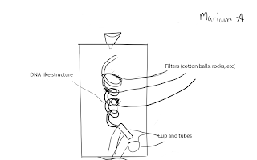
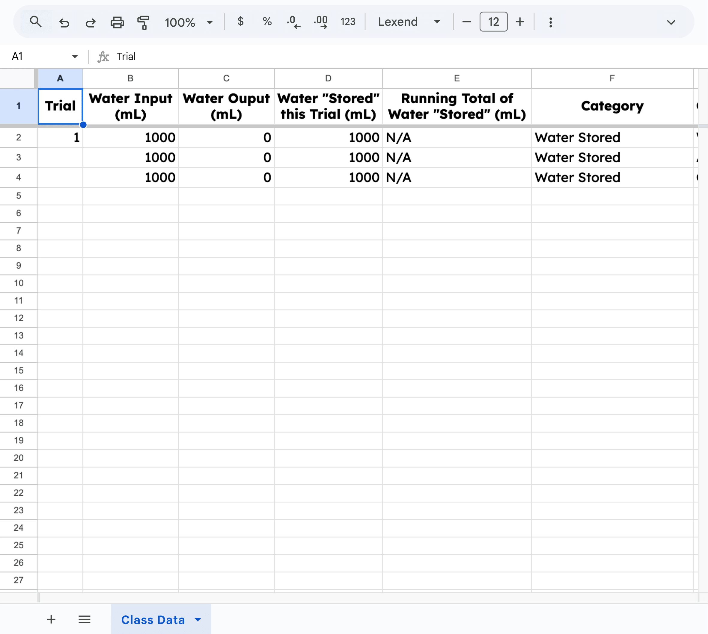
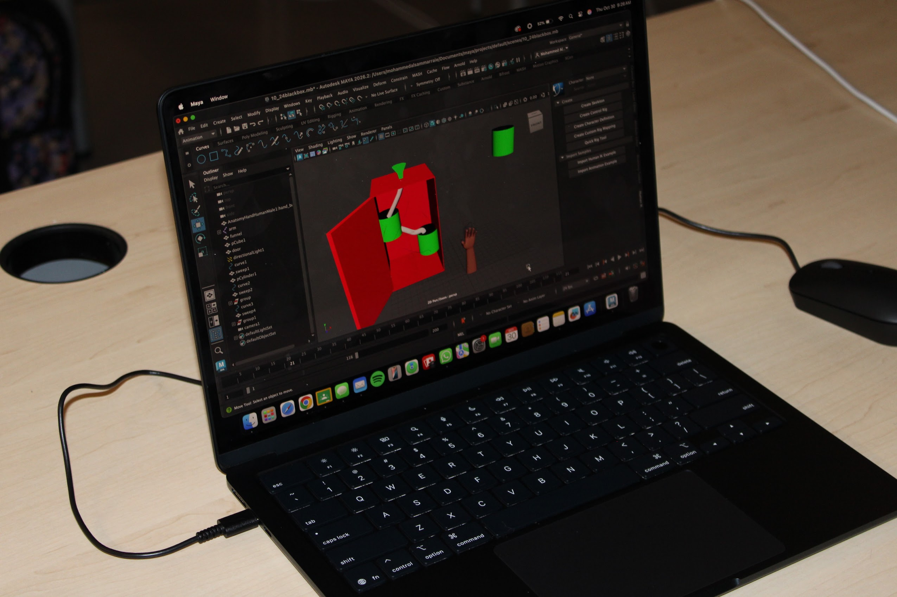
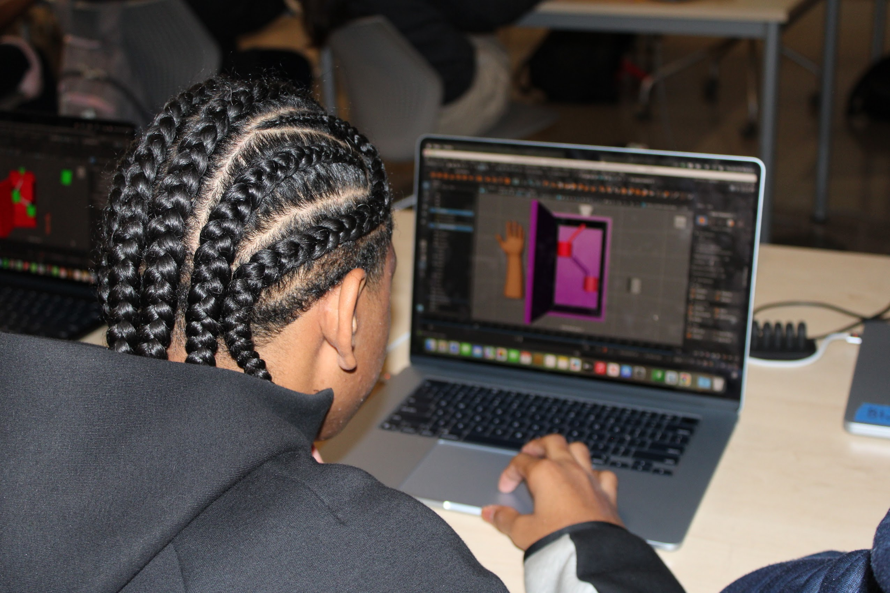
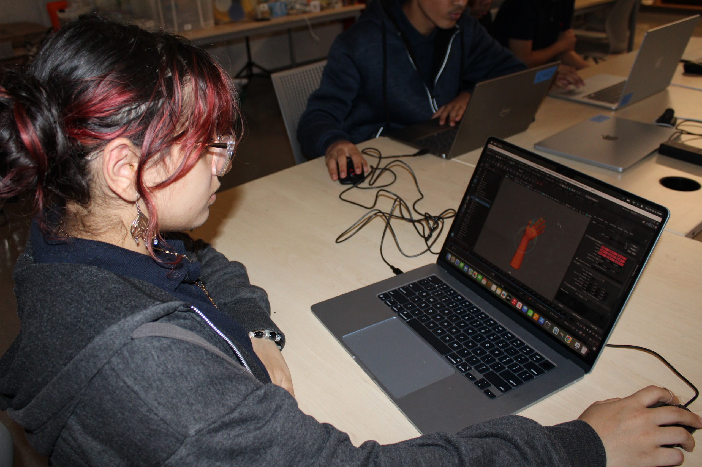
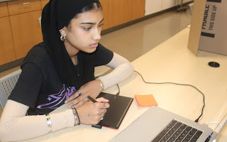

In this Investigation, I explored what was inside the mystery black box. The black box is a closed-off, big black box that has a funnel to pour in water and at the bottom is a plastic faucet where the water comes out. Over the past couple weeks, I experimented and observed to come to a conclusion on what could be inside.
Before testing, I believed that inside of the black box was a DNA-like swirly tube structure with filters and a bucket close to the bottom that empties/tilts when it is full, giving us whatever amount pours out of the faucet in the end. The reasoning that led me to that conclusion was that when I added water, Its output would either be more, less, or the same amount that originally went in. Its speed would either be a steady pace, very quickly, or very slowly. I no longer believe in this theory due to the data that was collected from the black box model that my group and I constructed. There was no numerical data that I was able to collect during the testing period. I could only get qualitative data based on observations. Our project started leaking slowly after pouring the water in and shortly after, began to fall apart. The observations made proved my hypothesis to be false about what the black box contains. I believe that due to the limitations of materials, our theory could not be proven at its full potential. Constructing the model using the limited materials won't capture the original black box's structure and complexity even if we were to take a different hypothesis. For example, the black box contains a wheel that would distribute a different amount of water to a different bucket. The claim is strong, however, due to the lack of materials, proving the claim's strength would be difficult.


Using the dSLR cameras given in class, I used the rule of thirds, framing, and angles to capture moments during the physical black box building and testing process. Along with the animation work in the Maya program. The photos that I took helped visually show my findings and other students' experience with this project. It communicates the steps that were taken to make our final conclusion. I learned that the lighting and positioning of the photograph can have a big effect on how someone would interpret it and the way they feel when looking at it.



For the 2-D design and animation phase in Adobe Photoshop of this project, I used the tablets and brushes to visually show my idea of what is inside the black box. The brushes helped apply color, depth, value, and shape to my drawing to make it more appealing. I also used frame-by- frame animation that transformed and gave life to my idea. Using Adobe, I represented the movement of water to further understand my theory and how to best model/construct it.

The final digital phase of this project was the 3D design and animation in the Autodesk Maya program. Personally, this was the hardest part of the black box project. I used tools like translating, rotating, and scaling. As well as adding shapes and other objects in the poly modeling shelf. These were the easiest features to get a hang of in the beginning. Then we transitioned into extruding, beveling, multicut, connect, booleans, etc. The trickiest one was making a curve/sweep mesh. It was very difficult to mold it and make it into the shape you truly wanted. There was, of course, the rigging and animation, as well as lighting and rendering. I didn’t get around to doing the Biofrost liquid simulation, but that was also a feature that was included.
A skill that I feel I most demonstrated or developed throughout this project is communication and collaboration. I presented my ideas and opinions about what the black box could contain to my group effectively, respectfully, and confidently. At times I did feel a little annoyed or bothered because of a situation, but I tried my best to keep that to myself and not let it affect the productivity of the group. I also used my communication skills in this webpage text and my CER portion of the project. I communicated my findings, observations, and data to help give a better understanding of why I came to my conclusion. For collaboration, I helped my groupmates whenever they were struggling with the Adobe design and animation, building the actual model, and photography. Overall, I feel I grew in this area significantly, but there is always room for more improvement and growth.